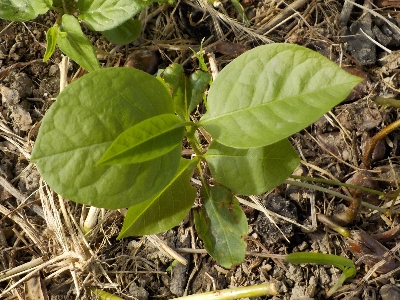
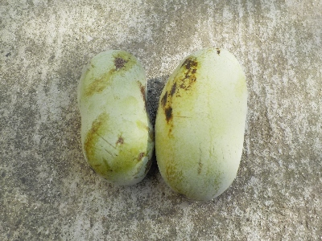
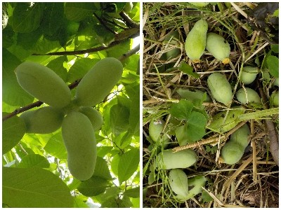
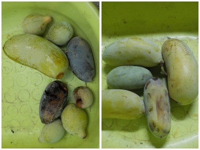
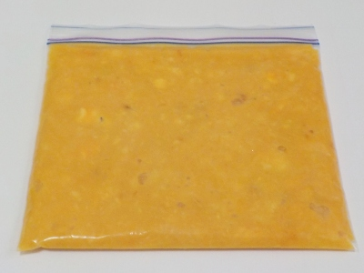
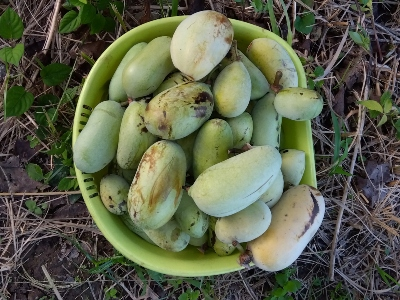

ポポーの実生を抜いています。
更新日 : 2025/07/19

ポポーの木のまわりに小さいポポーが誕生しています。
木の下で邪魔になるので抜き捨ててます。
近頃暑いので、去年収穫した冷凍保存のポポーを食べています。今年のポポー収穫までに食べきれるかな？
更新日 : 2025/07/19

ポポーの木のまわりに小さいポポーが誕生しています。
木の下で邪魔になるので抜き捨ててます。
近頃暑いので、去年収穫した冷凍保存のポポーを食べています。今年のポポー収穫までに食べきれるかな？
更新日 : 2025/08/31

今年は生で何個食べるかなー。
房が沢山付いてるところは間引いたので、そんなに大量には出来ない予定です。
更新日 : 2026/06/16

ポポーを育てる上で大切な摘果作業をしました。沢山出来ても食べれないし、熟して落ちたらタネが育って後で困りますからね。
私は1房には1個か2個実を付けるようにしています。
今年は摘果が遅かったみたいで実が少し大きくなっていました。大きいと実を見つけやすいので、これぐらいのタイミングでやると見逃しが少なくていいと思いました。
更新日 : 2026/08/31

左の画像は昨日収穫したものです。いつ木から落下したのか分からないので、全部コンポストに入れました。
右の画像は今日収穫したものです。こっちは落ちてから1日経っていないので、美味しくいただきます。
これから毎日、最低ても5個は拾うんだろうな。
更新日 : 2026/09/13

毎日コツコツ朝と夜に食べているポポーですが、とうとう収穫と消費量との差が大きくなったので冷凍保存することにしました。
今回はMサイズのフリージングパックを2枚作りました。多分食べるのは来年の初夏くらいからかな。
更新日 : 2026/09/17

これは今日の収穫分です。昨日も同じくらい収穫しました。
もういらない。もう収穫しません。
冬になったら1本切ろう。
ポポー作りも食べ方もだいぶ慣れました。